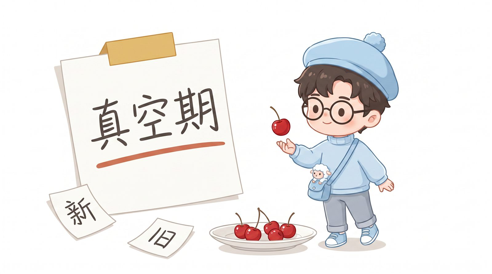

一每个环境都是楚门的世界
每一个环境都是"楚门的世界"——城市、家庭、公司、行业，网络时代里每一个大厂也是一个楚门。每一个都有看不见的边界、剧本和规则。
只有看到，才能建立起自己的自我意识。但"看见"本身不带来自由，它带来的是下一节的真空期。
二樱桃盘：突破之后的真空期
一盘樱桃，相当于你所在的群体；单个樱桃，相当于你个体。当个体突破这个环境盘的时候，有时会无处安放：
> 离开了老的环境，到了空气中
> 新的环境融不进去
> 老的环境也回不去了
于是人产生一种模糊——也就是所谓的孤独，
因为新的技能还没有成熟。
这就是真空期：新环境你还没长出能力，
老的环境你又不想进去。

但这是成长的必经之路：必须边长新能力，边让他人看见。长新能力时让别人看见，新环境的人才能找到你；做出一点点成绩后，新环境才能接纳你。
三AI 与点线面体
所有 AI 软件都是解决真实场景的痛点——有的是效率，有的是解决人手问题，让人类有更多余的时间。
点：每一个技能，也是它的功能
点连成线 → 线组成面 → 面组成体
一个体解决一个大的场景，也就是一群人
不同的体再组合——那又是什么？生态？平台？
分配权属于能把点组合成面、体的人。AI 让边际成本趋近于零，个体第一次可以绕过组织直接触达人群。
四读书：理解力是看见框架的透镜
为什么读书？让自己的意识或理解力增强——理解其他人说话的语言组织，以及他们说话的目的；让意识能有更多的了解。
理解力 → 学习力 → 看待事物不那么偏激。读书是为了理解这个世界是怎么链接的。理解了以后，能看到自己的不足、需要补充什么，进行行为上的改变——而不是被他人或者这个世界推动。
五闭环：从看见，到真实地活
1. 看见框架 → 自我意识觉醒
2. 突破框架 → 真空期：孤独，无处安放
3. 真空期不是终点，是生长：边长新能力，边让他人看见
4. 长出成绩 → 新环境接纳
5. 工具（AI、点线面体）放大个体的能力半径
6. 读书与理解力：让"看见"成为可持续的能力
看见框架，然后真实地活。
終
清晨思考流 · 长野 · 阿浩 · 2026-08-12